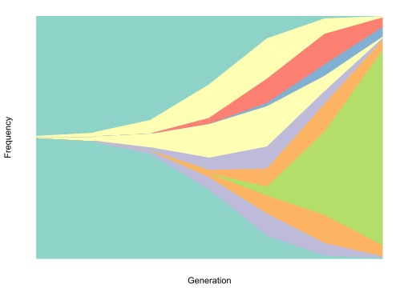

ggplot2
The most popular visualization package in R is ggplot2. It’s so popular, it or its aesthetic is copied in other languages/programs as well. It entails a grammar of graphics (hence the gg), and learning that grammar is key to using it effectively. Some of the strengths of ggplot2 include:
- The ease of getting a good looking plot
- Easy customization
- A lot of necessary data processing is done for you
- Clear syntax
- Easy multidimensional approach
- Decent default color scheme as a default
- Lots of extensions
Every graph is built from the same few parts, and it’s important to be aware of a few key ideas, which we will cover in turn.
- Layers (and geoms)
- Piping
- Aesthetics
- Facets
- Scales
- Themes
- Extensions
Note that while you can obviously use base R for visualization, it’s never going to be easier, nor as flexible as ggplot2. If you’re used to using base R visuals, you should be prepared to leave them behind.
Layers
In general, we start with a base layer and add to it. In most cases you’ll start as follows.
# recall that starwars is in the dplyr package
ggplot(aes(x=height, y=mass), data=starwars)This would just produce a plot background, but nothing else. However, with the foundation in place, we’re now ready to add something to it. Let’s add some points (the outlier is Jabba the Hut).
ggplot(aes(x=height, y=mass), data=starwars) +
geom_point()
Perhaps we want to change labels or theme. These would be additional layers to the plot.
ggplot(aes(x=height, y=mass), data=starwars) +
geom_point() +
labs(x='Height in cm', y='Weight in kg') +
theme_dark()
Each layer is consecutively added by means of a pipe operator, and layers may regard geoms, scales, labels, facets etc. You may have many different layers to produce one plot, and there really is no limit. However some efficiencies may be possible for a given situation. For example, it’s more straightforward to use geom_smooth than calculate fits, standard errors etc. and then add multiple geoms to produce the same thing. This is the sort of thing you’ll get used to as you use ggplot more.
Piping
As we saw, layers are added via piping (+). The first layers added after the base are typically geoms, or geometric objects that represent the data, and include things like:
- points
- lines
- density
- text
In case you’re wondering why ggplot doesn’t use %>% as in the tidyverse and other visualization packages, it’s because ggplot2 was using pipes before it was cool, well before those came along. Otherwise, the concept is the same as we saw in the data processing section.
ggplot(aes(x=myvar, y=myvar2), data=mydata) +
geom_point()Our base is provided via the ggplot function, and specifies the data at the very least, but commonly also the x and y aesthetics.
The geom_point function adds a layer of points, and now we would have a scatterplot. Alternatively, you could have specified the x and y aesthetic at the geom_point layer, but if you’re going to have the same x, y, color, etc. aesthetics regardless of layer, put it in the base. Otherwise, doing it by layer gives you more flexibility if needed. Geoms even have their own data argument, allowing you to combine information from several sources for a single visualization.
Aesthetics
Aesthetics map data to various visual aspects of the plot, including size, color etc. The function used in ggplot to do this is aes.
aes(x=myvar, y=myvar2, color=myvar3, group=g)The best way to understand what goes into the aes function is if the value is varying. For example, if I want the size of points to be a certain value, I would code the following.
... +
geom_point(..., size=4)However, if I want the size to be associated with the data in some way, I use it as an aesthetic.
... +
geom_point(aes(size=myvar))The same goes for practically any aspect of a geom- size, color, fill, etc. If it is a fixed value, set it outside the aesthetic. If it varies based on the data, put it within an aesthetic.
Examples
Let’s get more of a feel for things by seeing some examples that demonstrate some geoms and aesthetics.
To begin, after setting the base aesthetic, we’ll set some explicit values for the geom.
library(ggplot2)
data("diamonds"); data('economics')
ggplot(aes(x=carat, y=price), data=diamonds) +
geom_point(size=.5, color='peru')
Next we use two different geoms, one using a different data source. Note that geoms often have arguments specific to them, as label is for geom_text. It would be ignored by geom_line.
ggplot(aes(x=date, y=unemploy), data=economics) +
geom_line() +
geom_text(aes(label=unemploy),
vjust=-.5,
data=filter(economics, date=='2009-10-01'))
In the following, one setting, alpha (transparency), is not mapped to the data, while size and color are14.
ggplot(aes(x=carat, y=price), data=diamonds) +
geom_point(aes(size=carat, color=clarity), alpha=.05) 
Stats
There are many statistical functions built in, and it is a key strength of ggplot that you don’t have to do a lot of processing for very common plots.
Quantile regression lines:
ggplot(mpg, aes(displ, hwy)) +
geom_point() +
geom_quantile()
Loess (or additive model) smooth. This shows how we can do some fine-tuning and use model-based approaches for visualization.
data(mcycle, package='MASS')
ggplot(aes(x=times, y=accel), data=mcycle) +
geom_point() +
geom_smooth(formula=y ~ s(x, bs='ad'), method='gam')
Bootstrapped confidence intervals:
ggplot(mtcars, aes(cyl, mpg)) +
geom_point() +
stat_summary(fun.data = "mean_cl_boot", colour = "orange", alpha=.75, size = 1)
The take-home message here is to always let ggplot do the work for you if at all possible.
Scales
Often there are many things we want to change about the plot, for example, the size and values of axis labels, the range of sizes for points to take, the specific colors we want to use, and so forth. Be aware that there are a great many options here, and you will regularly want to use them.
A very common thing you’ll do is change the labels for the axes. You definitely don’t have to go and change the variable name itself to do this, just use the labs function. There are also functions for individual parts, e.g. xlab, ylab and ggtitle.
ggplot(aes(x=times, y=accel), data=mcycle) +
geom_smooth(se=F) +
labs(x='milliseconds after impact', y='head acceleration', title='Motorcycle Accident')
A frequent operation is changing the x and y look in the form of limits and tick marks. Like labs, there is a general lims function and specific functions for just the specific parts. In addition, we may want to get really detailed using scale_x_* or scale_y_*.
ggplot(mpg, aes(displ, hwy, size=cyl)) +
geom_point() +
ylim(c(0,60))
ggplot(mpg, aes(displ, hwy, size=cyl)) +
geom_point() +
scale_y_continuous(limits=c(0,60),
breaks=seq(0,60,by=12),
minor_breaks=seq(6,60,by=6))
Another common option is to change the size of points in some way. While we assign the aesthetic as before, it comes with defaults that might not work for a given situation. Play around with the range values.
ggplot(mpg, aes(displ, hwy, size=cyl)) +
geom_point() +
scale_size(range=c(1,3))
Now that you know more about color issues, you may want to apply something besides the default options. The following shows a built-in color scale for a color aesthetic that is treated as continuous, and one that is discrete and which we want to supply our own colors (these actually come from plotly’s default color scheme).
ggplot(mpg, aes(displ, hwy, color=cyl)) +
geom_point() +
scale_color_gradient2()
ggplot(mpg, aes(displ, hwy, color=factor(cyl))) +
geom_point() +
scale_color_manual(values=c("#1f77b4", "#ff7f0e", "#2ca02c", "#d62728"))
We can even change the scale of the data itself.
ggplot(mpg, aes(displ, hwy)) +
geom_point() +
scale_x_log10()
In short, scale alterations are really useful for getting just the plot you want, and there is a lot of flexibility for you to work with.
Facets
Facets allow for paneled display, a very common operation. In general, we often want comparison plots. The facet_grid function will produce a grid, and often this is all that’s needed. However, facet_wrap is more flexible, while possibly taking a bit extra to get things just the way you want. Both use a formula approach to specify the grouping.
facet_grid
Facet by cylinder.
ggplot(mtcars, aes(wt, mpg)) +
geom_point() +
facet_grid(~ cyl)
Facet by vs and cylinder.
ggplot(mtcars, aes(wt, mpg)) +
geom_point() +
facet_grid(vs ~ cyl, labeller = label_both)
facet_wrap
Specify the number of columns or rows with facet_wrap.
ggplot(mtcars, aes(wt, mpg)) +
geom_point() +
facet_wrap(vs ~ cyl, labeller = label_both, ncol=2)
Fine control
ggplot2 makes it easy to get good looking graphs quickly. However the amount of fine control is extensive. The following plot is hideous (aside from the background, which is totally rad), but illustrates the point.
ggplot(aes(x=carat, y=price), data=diamonds) +
annotation_custom(rasterGrob(lambosun,
width=unit(1,"npc"),
height=unit(1,"npc"),
interpolate = FALSE),
-Inf, Inf, -Inf, Inf) +
geom_point(aes(color=clarity), alpha=.5) +
scale_y_log10(breaks=c(1000,5000,10000)) +
xlim(0, 10) +
scale_color_brewer(type='div') +
facet_wrap(~cut, ncol=3) +
theme_minimal() +
theme(axis.ticks.x=element_line(color='darkred'),
axis.text.x=element_text(angle=-45),
axis.text.y=element_text(size=20),
strip.text=element_text(color='forestgreen'),
strip.background=element_blank(),
panel.grid.minor=element_line(color='lightblue'),
legend.key=element_rect(linetype=4),
legend.position='bottom')
Themes
In the last example you saw two uses of a theme- a built-in version that comes with ggplot (theme_minimal), and specific customization (theme(…)). The built-in themes provide ready-made approaches that might be enough for a finished product. For the theme function, each argument, and there are many, takes on a specific value or an element function:
- element_rect
- element_line
- element_text
- element_blank
Each of those element functions has arguments specific to it. For example, for element_text you can specify the font size, while for element line you could specify the line type.
Note that the base theme of ggplot, and I would say every plotting package, is probably going to need manipulation before a plot is ready for presentation. For example, the ggplot theme doesn’t work well for web presentation, and is even worse for print. You will almost invariably need to tweak it. I suggest using and saving your own custom theme for easy application for any visualization package you use frequently.
Extensions
ggplot2 now has its own extension system, and there is even a website to track the extensions. Examples include:
- additional themes
- maps
- interactivity
- animations
- marginal plots
- network graphs
- time series
- aligning multiple ggplot visualizations, possibly of different types

As one can see, ggplot2 is only the beginning. You’ll have a lot of tools at your disposal. Furthermore, many modeling and other packages will produce ggplot graphics to which you can add your own layers and tweak like you would any other ggplot.
Summary ggplot2
ggplot2 is an easy to use, but powerful visualization tool. It allows one to think in many dimensions for any graph, and extends well beyond the basics. Use it to easily create more interesting visualizations.
ggplot2 Exercises
Exercise 0
Install and load the ggplot2 package if you haven’t already.
Exercise 1
Create two plots, one a scatterplot (e.g. with geom_point) and one with lines (e.g. geom_line) with a data set of your choosing (all of the following are base R or available after loading ggplot2. Some suggestions:
- faithful: Waiting time between eruptions and the duration of the eruption for the Old Faithful geyser in Yellowstone National Park, Wyoming, USA.
- msleep: mammals sleep dataset with sleep times and weights etc.
- diamonds: used in the slides
- economics: US economic time series.
- txhousing: Housing sales in TX.
- midwest: Midwest demographics.
- mpg: Fuel economy data from 1999 and 2008 for 38 popular models of car
Recall the basic form for ggplot.
ggplot(aes(x=*, y=*, other), data=*) +
geom_*() +
otherLayers, theme etc.Themes to play with:
- theme_bw
- theme_classic
- theme_dark
- theme_gray
- theme_light
- theme_linedraw
- theme_minimal
- theme_trueMinimal (requires the lazerhawk package and an appreciation of the Lamborghini background from the previous visualization)

Exercise 2
Play around and change the arguments to the following. You’ll need to install the maps package.
- For example, do points for all county midpoints. For that you’d need to change the x and y for the point geom to an aesthetic based on the longitude and latitude, as well as add its data argument to use the seats data frame.
- Make the color of the points or text based on
subregion. This will require adding the fill argument to the polygon geom and removing the NA setting. In addition, add the argument show.legend=F (outside the aesthetic), or you’ll have a problematic legend (recall what we said before about too many colors!). Try making color based on subregion too. - See if you can use element_blank on a theme argument to remove the axis information. See ?theme for ideas.
library(maps)
mi = map_data("county", "michigan")
seats = mi %>%
group_by(subregion) %>%
summarise_at(vars(lat, long), function(x) median(range(x)))
# inspect the data
# head(mi)
# head(seats)
ggplot(mi, aes(long, lat)) +
geom_polygon(aes(group = subregion), fill = NA, colour = "grey60") +
geom_text(aes(label = subregion), data = seats, size = 1, angle = 45) +
geom_point(x=-83.748333, y=42.281389, color='#1e90ff', size=3) +
theme_minimal() +
theme(panel.grid=element_blank())
The reason the legend is hard to make out is because the transparency is mapped to the colors and size. While I personally have never come across this being a desirable situation, nor can fathom why it would be the default, it can be fixed via
+ guides(colour = guide_legend(override.aes = list(alpha = 1)), size = guide_legend(override.aes = list(alpha = 1))). Apparently because that’s fun to have to do every time and easy to remember.↩